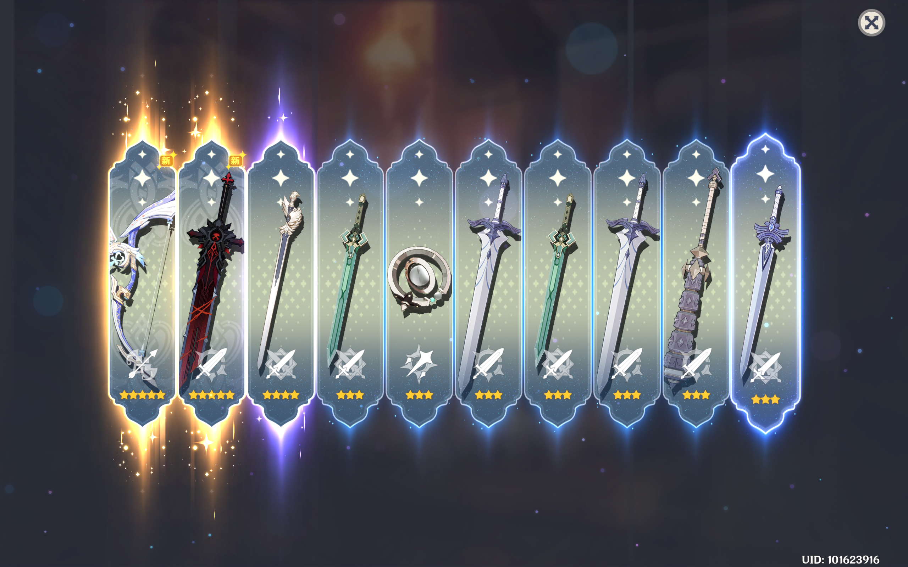
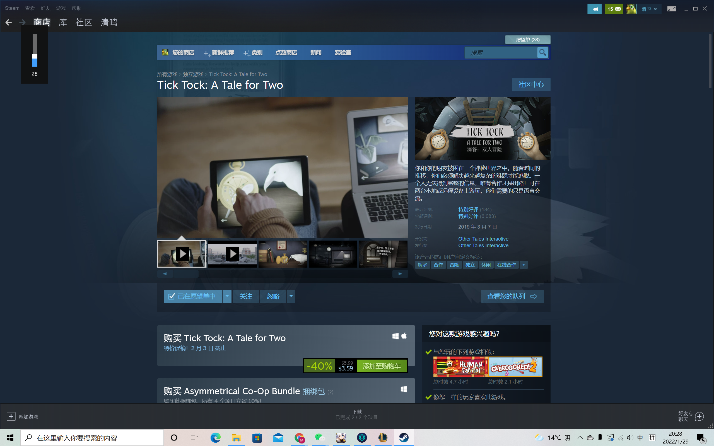
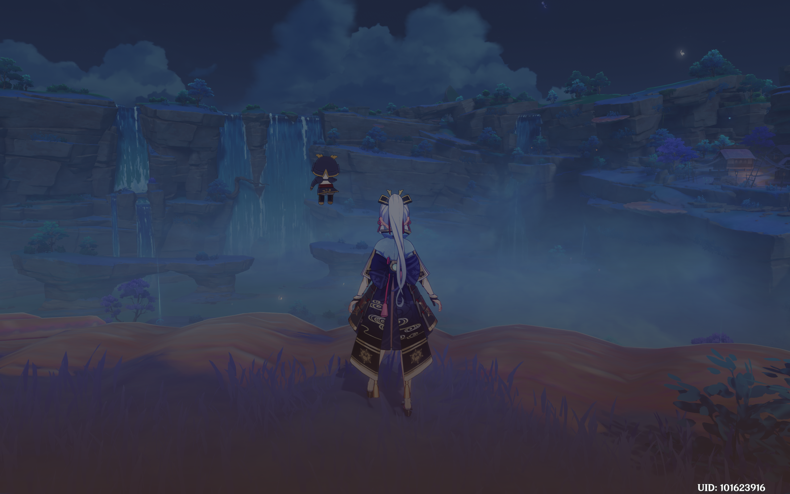
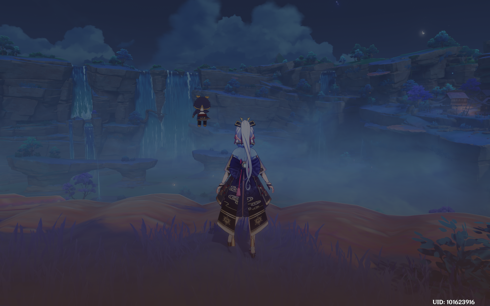

Mingrun Li
Personal Information: Full name, phone #, email address
(professional/school)
● Objective: What do you hope to gain from the job or position *optional*
● Education: College Education first then High school.
- Include: School name and location
● Degree type: **Only include GPA if it is above 3.5**
● Experience: Can include all & any work/volunteer/position related
experience.
(e.g. Include: Position; Company name and location; duration of job;
brief summary of description. Put recent jobs first! Use action verbs
and be specific! High school activities can be on there till the end of
your first or second year of college).
● Skills: Hard skills no soft skills.
● Other: Relevant coursework, community service, awards/scholarships,
on-campus involvement, references
Summary: Forky is looking to apply
for a part-time position at
Sunnyside Daycare.
He used to give advice and
participate in leading group
activities, and would help Bonnie to
organize events such as plays and
game activities.
● Activity: How would Forky be able to
put into words of the following
description? What action verbs
should he use? Should it be a
work/volunteer/leadership/etc.?
Leadership Experience
Captain June 2019 - December 2021
● Motivated team members to participate in any tasks assigned by
Bonnie to ensure teamwork amongst members.
● Provided counseling and advice for team members during service
hours.
● Organized theater props and collaborated with the set design
team to prepare for upcoming performances.
Create an outline of past experiences you have done
(work/volunteer/sports/clubs/etc.)
● Include relevant and necessary content and highlight
your best qualities and skills.
● Use bullet points & action verbs to summarize a brief
description of the experience. Relevant vocabulary that
is mentioned in the job application/description.
● Save & Submit your resume/cover letter/ANY documents as
PDF!!!!
● There are multiple formats of writing and different ways
to share experiences, as long as it’s at least 1 page.
● Other things that can be included in job application can
be a personal statement essay, portfolio, sample
projects/writings
● Do your research on the job/internship/etc.!!!
● Have others look over your resume/cv for constructive
feedback (e.g. advisor, counselor, peer educator, etc.)
Experience
Education
University of California Riverside
Portfolio




